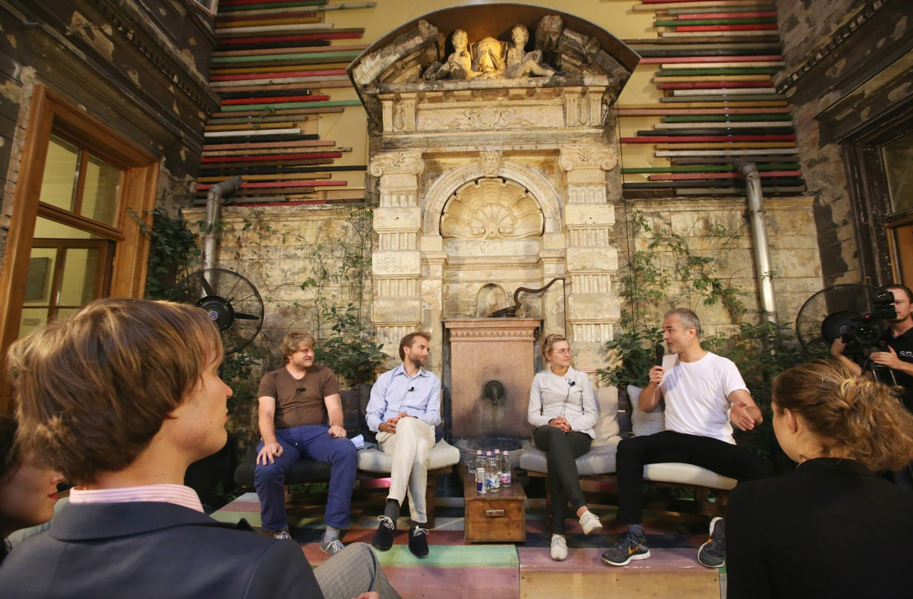

kuksenok /about /now
PhD, MS in Computer Science & Engineering from University of Washington
BA in Applied Math; Computer Science from Oberlin College, Ohio, US
CV PDF (Dec '16) Reach me via LinkedIn
{kind=link}
Socio-technical Systems Research
- qualitative, ethnographic approaches; user research through interviews and surveys
- Influence apart from Adoption: How Interaction between Programming and Scientific Practices Shapes Modes of Inquiry in Four Oceanography Teams. (Ph.D. research)

A video of an invited panel appearance - moderated by Nick Denton, Gawker Media founder - about the role of social media in political action. (Budapest, 2014)
2017
- Kateryna Kuksenok, Cecilia Aragon, James Fogarty, Charlotte P. Lee, Gina Neff. Deliberate Individual Change Framework for Understanding Programming Practices in four Oceanography Groups. Comput Supported Coop Work (2017). doi:10.1007/s10606-017-9285-x.
- Allen A, et al. Engineering Academic Software (Dagstuhl Perspectives Workshop 16252). Schloss Dagstuhl--Leibniz-Zentrum fuer Informatik. Dagstuhl, Germany. 2017.
2016
- Bangalore S, and Kuksenok K. "System and method for collaborative language translation." U.S. Patent No. 9,323,746. 26 Apr. 2016. (In the press: Using active learning to improve statistical machine translaiton output)
2015
- Kuksenok K. "Multilingualism on Social Media in the Maidan Movement." Digital Eastern Europe. Edited by Schreiber and Kosienkowski. 2015.
2014
- Role of social media in 2014 Ukraine Maidan events (Central European University, Phil Howard)
- Chen C, White L, Kowalewski T, Aggarwal R, Lintott C, Comstock B, Kuksenok K, Aragon C, Holst D, Lendvay T. Crowd-Sourced Assessment of Technical Skills: a novel method to evaluate surgical performance. J Surgical Res. 2014; 187(1): 65-71.
2013
- Kuksenok K, Brooks M, Wang Q, Lee C P. Challenges and Opportunities for Technology in Foreign Language Classrooms. CHI 2013, premier publishing venue in the Human-Computer Interaction (HCI) community. Best Paper Honorable Mention (top 5%)
- Kuksenok K, Mankoff J, Brooks M. Accessible Online Content Creation by End Users. Proceedings of the SIGCHI Conference on Human Factors in Computing Systems. ACM, 2013.
- Brooks M, Kuksenok K, et al. Statistical Affect Detection in Collaborative Chat. In Proceedings of the 2013 conference on Computer supported cooperative work. ACM, 2013.
2012
- Scott T J, Kuksenok K, Brooks M, Aragon C. Adapting Grounded Theory to Construct A Taxonomy of Affect in Collaborative Online Chat. Proceedings of the 30th ACM international conference on Design of communication. ACM, 2012
2011
- Mankoff J, Kuksenok K, Kiesler S, Rode J, Waldman K. Competing Online Viewpoints and Models of Chronic Illness. Proceedings of ACM SIGCHI Conference on Human Factors in Computing Systems, 2011.
P.S./A.K.A.
You may also know me as: Kateryna Kuksenok, Katie Kuksenok, Katja Kuksenok, Kt Kuksenok. Feel free to use any! I prefer Katja or Katerena (emphasis on the "re" syllable, pronounced as in "reykjavik," not as in "ice cream").